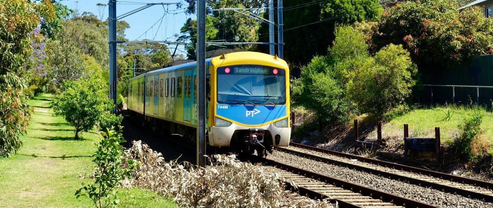
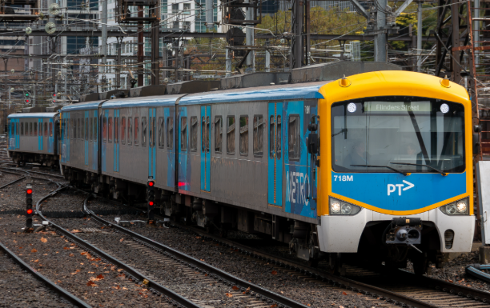
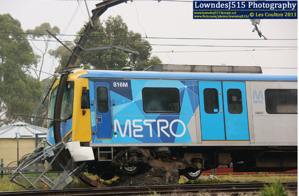

Siemens Fleet
The Siemens Nexas trains form a key part of Melbourne’s electric train fleet, introduced in the early 2000s as part of a modernization effort for the city’s rail network. Built by Siemens in Germany and assembled in Austria, these trains were Melbourne’s first fully imported EMUs and featured a sleek, modern European design. Known for their smooth ride and wide, open carriages, the Nexas fleet stands out for its quiet operation and high acceleration, making it ideal for longer, express services across the network.

Information and Statistics
Introduced: 2003–2006
Built by: Siemens, Germany (assembled in Austria)
Number built: 72 six-car sets (144 three-car units)
Operator: Metro Trains Melbourne, originally ordered by "M>Train"
Design: Stainless steel body with a wide interior layout and streamlined cab
Power system: 1,500V DC overhead
Configuration: 3-car units (M–T–M) paired into 6-car sets
Top speed: 130 km/h
Length per 3-car unit: ~72.6 meters
Passenger capacity: Approximately 432 seated per 6-car set, with standing room for many more
Special features: Regenerative braking, quiet interiors, single-arm pantographs

Challenges and Modifications
The siemens were a cheap design ordered from europe, unlike all the others (discluding the xtrapolis 100) that were made mostly or fully in Melbourne. This lead to a bunch of compatability problems and issues over the years
In their early years, Siemens trains faced significant braking issues, including incidents where trains overshot platforms. In 2006, a temporary speed restriction and extensive safety testing were introduced, and modifications were made to address the issue.
Additional upgrades were carried out to improve door systems, driver visibility, and communications equipment, as well as to comply with accessibility and fire safety standards.
The siemens fleet only have 2 doors, which causes crowding near the doors during peak periods, as passengers funnel through just two access points per carriage. This has been a problem with the fleet as it can cause longer dwell times, which sometimes disrupts service punctuality on heavily used lines.

A nexas that crashed into a pole due to the breaking problems
Metro trains fleet is a website made in a VET class, not official.